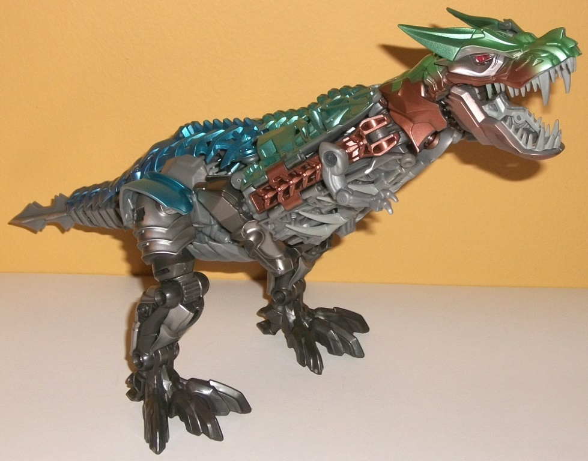
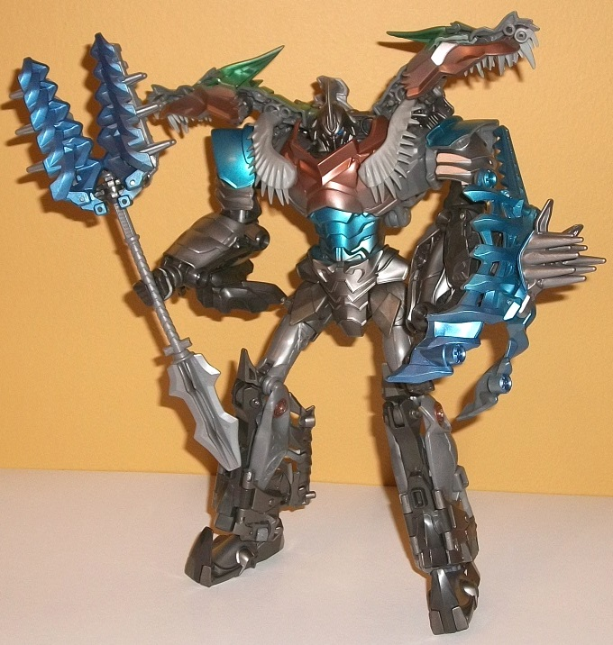
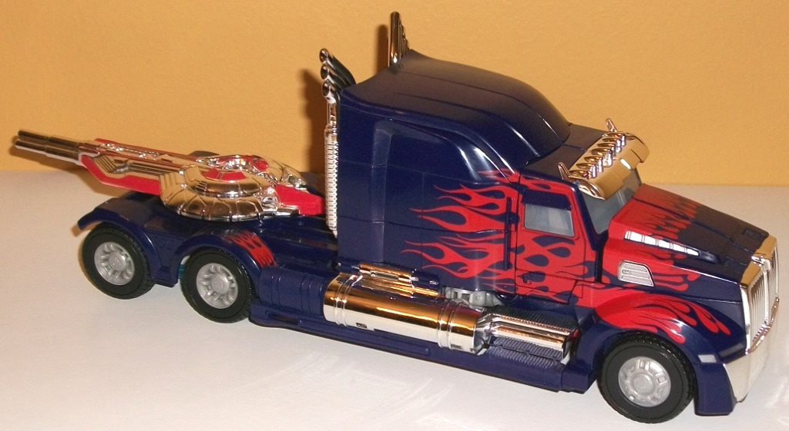
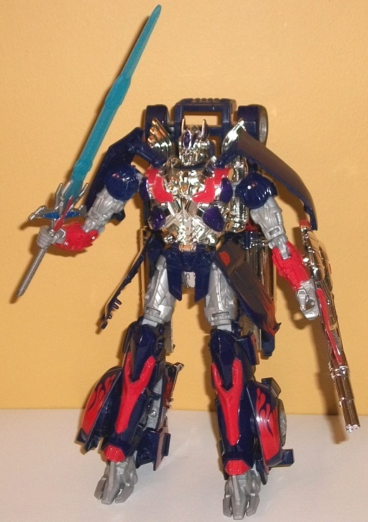

Grimlock
& Optimus Prime (Leader; Platinum Edition) [AoE] {Online Retailer/Toys
"R" Us Exclusive}
Grimlock
& Optimus Prime (Leader; Platinum Edition) [AoE] {Online Retailer/Toys
"R" Us Exclusive}
Price
: $100 (U.S.)
Allegiances
: Autobot
Overall Rating
: 7.9
(NOTE: Because this set is composed of repaints,
this is not a full-blown review. This mainly covers any changes made to
the set and the color scheme, and merely compares it to the original versions
of these molds. For a review on the original AoE Leader Grimlock toy, go
here
.
For a review on the original AoE Leader Optimus Prime, go
here
.)
Grimlock


Size
: Leader
Difficulty of Transformation:
Very
Hard
Color Scheme
: Milky moderately light
gray, milky dark gray, metallic aquamarine, metallic pale green, flat bronze,
metallic blue, and some gunmetal gray, light flat gray, silver, blue, and
red
Individual Rating
: 7.9
Grimlock has gotten quite
the makeover for his Platinum Edition version-- and it's a very welcome
makeover, given how inaccurate nearly every one of his toys is color-wise
when compared to his movie model. This redeco attempts to rectify the inaccuracy--
at least as the colors go-- by giving Grimlock a bit of a "rusty, bottom-of-the-sea"
look on the top of his T-rex mode, with most of his other parts being various
shades of gray and just a titch of bronze, to tie him back in with his
other AoE toys at least slightly. The metallic paint on the top of his
T-rex mode is absolutely beautiful, going from a rather rusted-out green
to a nice aquamarine to a more straightforward blue as you go down from
the head to the tail. It's a remarkably well-done transition and very eye-catching.
Even in robot mode, these colors still are mixed throughout Grimlock's
form quite nicely, with the shoulders, weapons, and abs metallic blue or
aquamarine, with the metallic green on the shoulders showing through pretty
nicely as well. Meanwhile, the bronze is on the lower dino jaw on the shoulders
and the robot chest. Most of the rest of Grimlock is gray-- as is accurate
to the movie-- but thankfully, it's not as boring as that simple description
suggests. Much of the gray is either silver paint or gunmetal gray paint,
both of which look fantastic, particularly the latter. For parts that couldn't
really be painted, there's some milky dark and moderately light gray, but
both are milky/glossy enough where they don't look boring in the amounts
that they're used. The headsculpt is also coated in gunmetal gray paint,
with some blazing blue eyes that really pop. The only actual color I don't
like on Grimlock is the shade used for the fake "teeth" on the sides of
his robot chest; it's a really flat shade of the color that doesn't fit
at all in with Grimlock's otherwise stupendous, metallic-or-glossy color
scheme.
No mold changes have
been made to this version of Grimlock.
Grimlock Bio:
Grimlock is the ultimate wildcard. The
Dinobot leader has the power to decide the fate of Earth. He has battled
countless enemies across the universe, never concerning himself with trophies,
only victories. He has proven difficult to capture and almost impossible
to defeat. When an enemy does manage to get the best of him, it's never
for long. Uncaged and unleashed, Grimlock is concerned with only one thing:
vengeance against those who would try to control him.
Optimus
Prime


Size
: Leader
Difficulty of Transformation
: Medium
Color Scheme
: Very dark flat navy
blue, chrome silver, light red, light milky gray, and some black, translucent
icy blue, transparent icy white, silver, dark blue, light sky blue, and
chrome purple
Individual Rating
: 8.0
Optimus Prime keeps the
same basic color scheme as his original AoE Leader class toy, but the main
and most obvious change here is that the blue is much, MUCH darker on this
version-- just a shade above being black, actually. It certainly makes
for a darker, slightly more "evil" appearance, which can make for a good
movieverse Nemesis Prime toy if you so desire. Regardless, much of the
actual paint apps on this version of Optimus are the same as on the original
Leader class toy-- a bit of a disappointment, considering the premium price
of this version. All of the red paint apps from the original are on this
version, but the shade of red is considerably lighter, making it contrast
with the very dark blue and chrome silver much better, and it just generally
pops more. There's also some red added to the lower robot legs, in a bit
of a departure from the norm for Optimus (though these aren't actual new
paint apps, they just take the place of some of the silver ones on the
original). The placement of the blue is pretty much unchanged for this
version-- same with the black, same with the blah light milky gray plastic
on the wheel hubs and a few parts of the robot mode. There has been a touch
more chrome added-- most noticeably on the shield/gun weapon, which looks
really darned pretty with the added chrome. The robot head has also been
chromed, and here has considerably more paint detail than on the original--
the way the chrome purple apps on the helmet and the light blue on the
eyes plays off the chrome looks REALLY cool and is one of the best things
about the toy. There's also some of this chrome purple on the lower chest,
in place of the usual blue, and the actual body piece has been chromed
beyond simply the chestplate piece, though this doesn't add much to the
overall look. There's also been a bit of an "icy" feel added to Optimus
this time around, with his windows being a rather frosted-up variation
of the clear color, while his sword is a more bluish icy color. Both look
quite good and contrast well with their surroundings while giving Optimus
a bit more of a "cold" look to him, as befits most of the rest of the toy.
On one small additional note, the vents on the side of the front nose of
the vehicle mode have been painted silver on this version, whereas they
were simply painted over with the flame red on the original; the other
unmentioned paint apps on this version of Prime are the same as on the
original.
No mold changes have
been made to this version of Optimus Prime.
Optimus Prime Bio:
Optimus Prime has long believed that
freedom is the right of all sentient beings. He has never wavered from
his belief, no matter what has befallen him in battle. Once again ready
to defend the people of his adopted planet, the unyielding Autobot Commander
prepares for the battle that will allow the Autobots to reclaim their role
as Earth's honored protectors.
The leader class Grimlock
& Optimus Prime "Platinum Edition" 2-pack is an easy recommendation
for those who want the molds, but don't have the mass releases. The set
is surprisingly reasonably-priced for a Platinum Edition set, being just
$10 more expensive than buying each toy seperately, and both come with
superior paint jobs. Grimlock's mixing of metallic greens, blues, and bronzes
in with his gray looks fantastic and is by far the most movie-accurate
paint job he's gotten, and although Prime is LESS movie-accurate in terms
of his new color scheme, the darkened blue, lightened red, and addition
of a bit more chrome and stellar paint job on his head all make him look
better than the original as well. Honestly, the molds themselves are the
weakest part of this set-- both certainly have their good points, but neither
is particularly spectacular. Still, if you want some well-painted, large
versions of these characters, this is the set to go for.
Reviews by Beastbot
Back to Transformers:
Age of Extinction Index